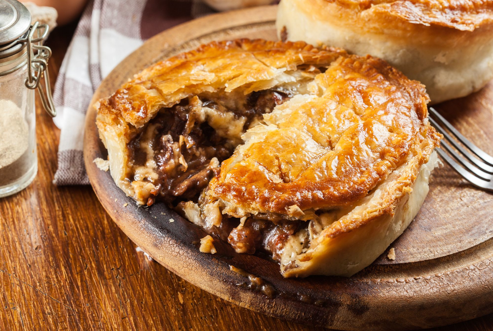
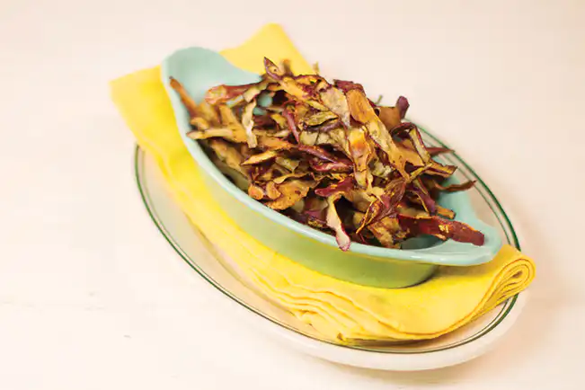

Pudim de Pão Crocante
Reaproveite aquele pão amanhecido e crie uma sobremesa deliciosa.
Aproveitamento de Pães
Farofa Rica em Talos
Talos de vegetais ganham nova vida nesta farofa nutritiva e saborosa.
Vegetais / Cascas
Bolinho de Arroz Recheado
Transforme o arroz que sobrou em um lanche crocante e irresistível.
Aproveitamento de Sobras
'Carne' de Casca de Banana
Uma alternativa vegana e sustentável, rica em fibras e sabor.
Aproveitamento de Frutas

Torta Salgada de Sobras
Sobrou frango desfiado, legumes ou presunto? Misture tudo numa massa leve e asse uma torta prática, saborosa e ideal para limpar a geladeira sem perder sabor.
Aproveitamento de Frutas

Cascas de Legumes Crocantes
Cascas de batata, cenoura ou abóbora, quando temperadas e assadas, viram chips nutritivos e crocantes. Uma alternativa saudável e esperta pra aproveitar tudo do alimento.
Aproveitamento de Frutas